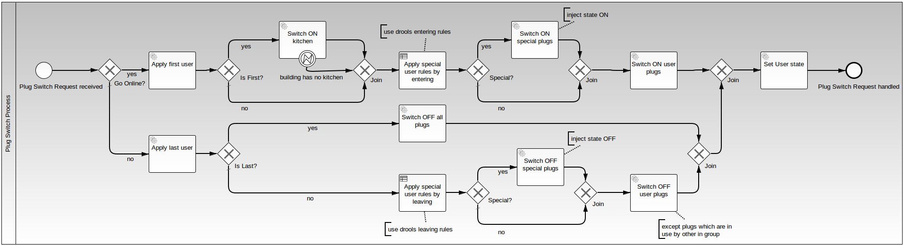

Haben eine REST Schnittstelle für Benutzer, Lampen, Gruppen usw.
DB im Hintergrund, Middlewarearchitektur die weitere Integrationen (über services) vorsieht
Haben einen dubiosen BPM Prozess ??
Und wer meldet die Benutzerzustände?
plug-switch-process

A business rule
z.B. Räume als Gruppen
auch andere IP fähige Geräte können Aktivitäten beeinflussen
Laptop an --> Licht im Büro an?
Laptop aus --> Licht aus besser!
rule "Switch ON Office for PascalsMBP"
when
u : User( username == "PascalsMBP" )
then
HashSet<String> specials = new HashSet<String>();
specials.add( "Office" );
insert( specials );
end